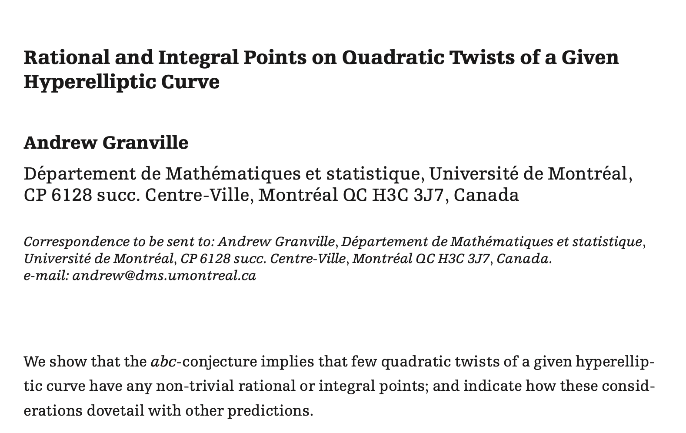
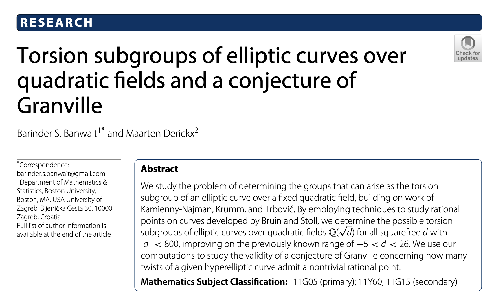
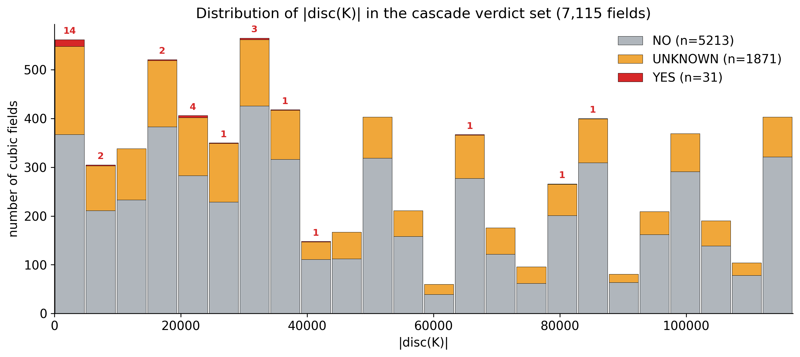
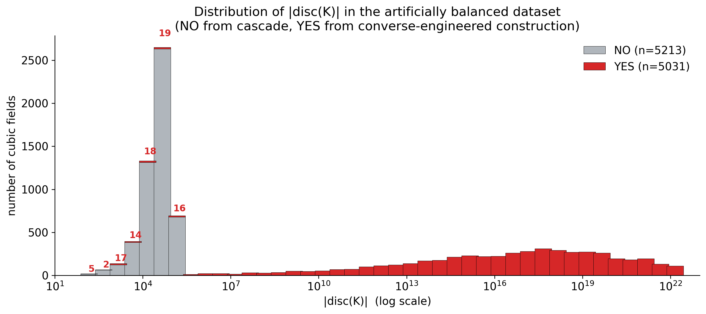
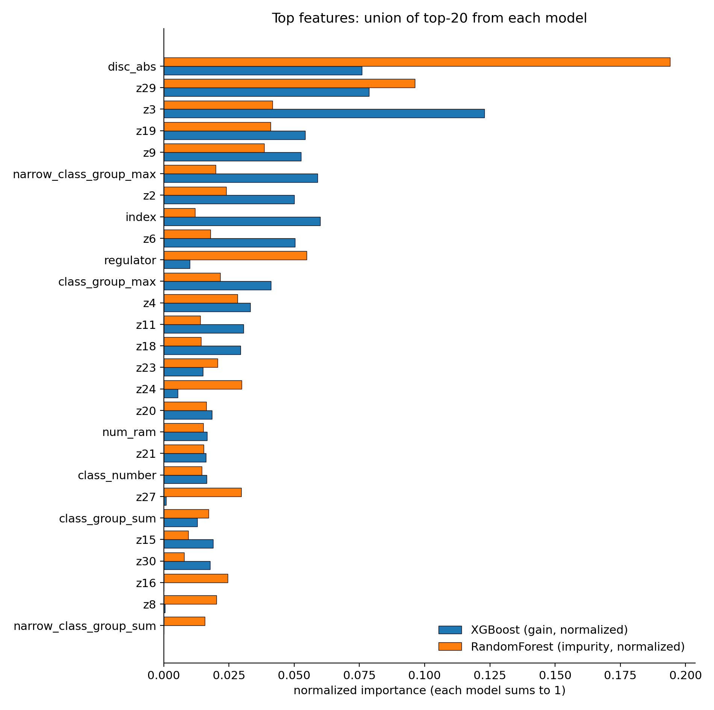
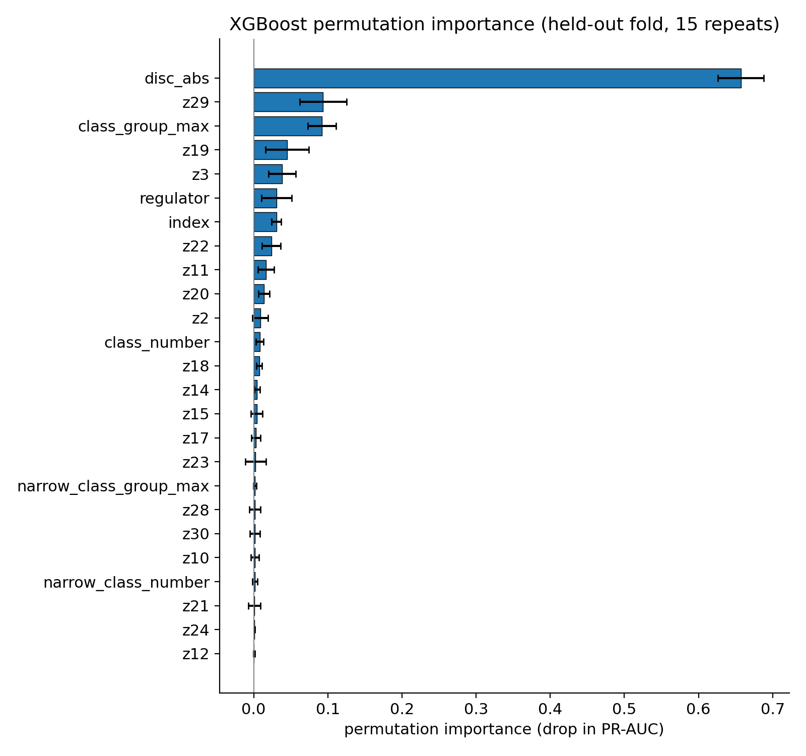

AI-assisted experiments
Barinder S. Banwait
Joint with Maarten Derickx
Using AI to find examples · 1st May 2026
Centre de Recherches Mathématiques, Montréal, Canada
barindersbanwait.com/talks/cubic-isogeny-primes
What we really want from you is a discussion of how you used the AI to get some nice results — the ups and downs and how things played out. Sort of a mingled hacker talk with math research — I hope that makes sense?
$E/\mathbb{Q}$ elliptic curve.
If $E/\mathbb{Q}$ is an elliptic curve admitting a rational $p$-isogeny, then $$p \in \{2,\,3,\,5,\,7,\,11,\,13,\,17,\,19,\,37,\,43,\,67,\,163\}$$ $$=: \mathrm{IsogPrimeDeg}(\mathbb{Q}).$$
Mazur did this for $\mathbb{Q}$ in '78 — can you do it for any other number field?
Assuming GRH, we have the following.
$$\begin{aligned} \mathrm{IsogPrimeDeg}(\mathbb{Q}(\sqrt{7})) &= \mathrm{IsogPrimeDeg}(\mathbb{Q})\\ \mathrm{IsogPrimeDeg}(\mathbb{Q}(\sqrt{-10})) &= \mathrm{IsogPrimeDeg}(\mathbb{Q})\\ \mathrm{IsogPrimeDeg}(\mathbb{Q}(\sqrt{5})) &= \mathrm{IsogPrimeDeg}(\mathbb{Q}) \cup \left\{23, 47\right\} \end{aligned}$$Actually this is a corollary of the following.
Let $K$ be a quadratic field which is not imaginary quadratic of class number $1$. Then there is an algorithm which computes a superset of $\mathrm{IsogPrimeDeg}(K)$.
Let $K$ be a number field that does not contain the Hilbert class field of an imaginary quadratic field. Then there is an algorithm that computes a superset of $\mathrm{IsogPrimeDeg}(K)$.
Assuming GRH, we have the following.
$$\begin{aligned} \mathrm{IsogPrimeDeg}(\mathbb{Q}(\zeta_7)^+) &= \mathrm{IsogPrimeDeg}(\mathbb{Q})\\ \mathrm{IsogPrimeDeg}(\mathbb{Q}(\alpha)) &= \mathrm{IsogPrimeDeg}(\mathbb{Q}) \cup \left\{29\right\}\\ \mathrm{IsogPrimeDeg}(\mathbb{Q}(\beta)) &= \mathrm{IsogPrimeDeg}(\mathbb{Q}), \end{aligned}$$where $\alpha^3 - \alpha^2 - 2\alpha - 20 = 0$ and $\beta^3 - \beta^2 - 3\beta + 1 = 0$.
Why cubic? Because for every cubic field, $\mathrm{IsogPrimeDeg}(K)$ is finite.
Given $K$, is $29$ an isogeny prime for $K$?
i.e. does the modular curve $X_0(29)$ admit a noncuspidal $K$-rational point?
Suppose $p = 23$, $29$ or $31$. Let $K$ be a cubic field such that $X_0(p)$ admits a noncuspidal $K$-rational point. Then we have the following.
For $p = 29$, there are 5 curves:
$H_1, H_2, H_5$ have genus $3$ (degree $8$); $H_3, H_4$ have genus $2$ (degree $6$).


This paper implemented many techniques for showing that twists of hyperelliptic modular curves don't admit a $\mathbb{Q}$-point (TwoCoverDescent, MWSieve, IsELS, EllipticCurveChabauty, Chabauty0).
We use this to show that many cubic fields $K$ provably do not admit $29$ as an isogeny prime. We add this to a growing ground truth dataset.
Question: Can we train an ML model to detect cubic fields that admit $29$ as an isogeny prime?

There is a way of generating YESs from plugging in rational $x$-values into one of the $5$ hyperelliptic curves, via a converse to our theorem,
but the discriminants obtained are enormous.
Artificially balancing the dataset with this gave us a dataset of the following distribution:

The features we used in the dataset:
class_group, class_number, conductor, disc_abs, index, monogenic, narrow_class_group, narrow_class_number, num_ram, z1, z2, …, z30
(z1–z30 are the first 30 zeta coefficients.)
We trained (1) XGBoost, (2) Random Forest on this balanced dataset, 80/20 train-test split.
Test set (held-out 20%, 2049 rows, balanced):
| Model | accuracy | ROC-AUC | PR-AUC |
|---|---|---|---|
| XGBoost | 0.9946 | 0.9996 | 0.9996 |
| RandomForest | 0.9932 | 0.9993 | 0.9994 |
Top features (XGBoost):
| feature | gain | permutation Δ PR-AUC |
|---|---|---|
index | 0.769 | 0.257 |
z3 | 0.027 | 0.000 |
z2 | 0.019 | 0.000 |
z27 | 0.015 | — |
z6 | 0.015 | — |
class_group_rank | 0.014 | — |
z29 | — | 0.0004 |
num_ram | — | 0.0003 |
index carries 77% of the gain and a 26% PR-AUC drop under permutation — basically the entire signal. Why?
index = 1 | index > 1 | |
|---|---|---|
| NO (cascade) | 5,014 (96%) | 199 (4%) |
| YES (converse) | 77 (1.5%) | 4,954 (98.5%) |
| Unknowns | 1,779 (95%) | 92 (5%) |
index is almost a perfect class indicator on the balanced training set — but the unknowns share the NO distribution (overwhelmingly $1$).
Predicted on the $1871$ unknowns: only $9$ (XGBoost) / $7$ (RF) flagged YES; median $P(\text{YES}) = 0.0001$.
The model isn't learning the mathematics; it's learning the data provenance — which is a perfect proxy for the label only because we built it that way.
master_features.csv — 5,314 rows (5,213 NO + 101 YES), ~52:1 imbalance.Out-of-fold metrics across 5-fold stratified CV (101 YES across all folds):
| Model | ROC-AUC | PR-AUC | YES in top-50 | Lift |
|---|---|---|---|---|
| Weighted XGBoost | 0.969 | 0.724 | 47 / 101 | ~49× |
| Focal-loss XGBoost | 0.944 | 0.576 | 36 / 101 | ~38× |
| Isolation Forest | 0.723 | 0.097 | 10 / 101 | ~10× |
(Random would put ~$0.95$ YES rows in the top 50.)


disc_abs dominates ($\Delta$ PR-AUC $\approx 0.66$), with z29, class_group_max, z19, z3, regulator following.
⚠ Yellow flag: heavy disc_abs reliance — this drove the rest of the experiments.
| LMFDB-only (52:1) | Balanced + converse-engineered (1:1) | |
|---|---|---|
| Test PR-AUC | 0.72 | 0.9996 |
| Distribution shift? | None | Baked in |
| Transfers to unknowns? | Yes | No (predicts NO for nearly all) |
| What was learned? | Real signal | A label proxy (index) |
The first one is the honest result. The second is the cautionary tale.